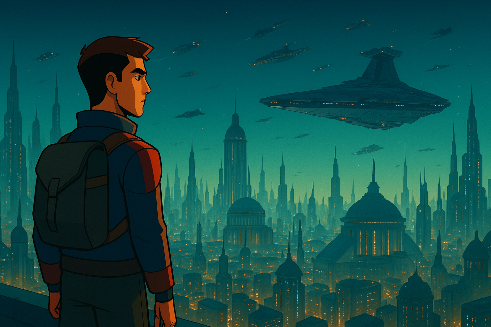

|
||||||||||||
|
👤 Presentación | 🎯 Aficiones | 🚀 Objetivos | 📚 Formación | ✉️ Contacto |
||||||||||||
👤 Presentación PersonalHola, soy Luis Miguel Pablos Orge, estudiante de primer curso del Ciclo Formativo de Grado Superior en Desarrollo de Aplicaciones Multiplataforma (DAM) en el centro CITED de Jerez, y en esta web voy a mostrarte un poco sobre mí: mis aficiones, mis objetivos profesionales, mi formación académica y cómo puedes contactar conmigo.

🎯 AficionesEn mi tiempo libre disfruto de diversas actividades como:
🚀 Objetivos ProfesionalesMis metas a corto y medio plazo:
🔗 Más información en mi GitHub. 📚 Formación Académica
|